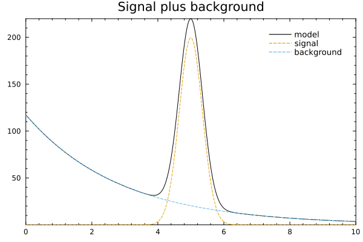
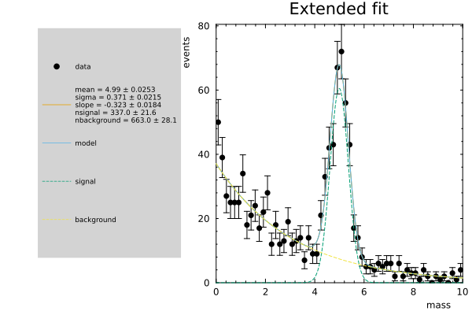

Signal Plus Background
RooFit often models a distribution as a weighted sum of simpler PDFs. This tutorial builds the RooFitLite version of that pattern: a Gaussian signal over an exponential background, generated as toy data and fit with Minuit2.
using RooFitLite
using Minuit2
using Plots
using Random: seed!
theme(:boxed)
seed!(12345)Random.TaskLocalRNG()Build the components
All components share the same observable. The Gaussian describes a localized signal peak, while the exponential gives a falling background shape.
x = RealVar(:mass, 0.0, limits=(0.0, 10.0), nbins=60)
mean = RealVar(:mean, 5.0, limits=(3.0, 7.0))
sigma = RealVar(:sigma, 0.35, limits=(0.1, 2.0))
signal = Gaussian(:signal, x, mean, sigma)
slope = RealVar(:slope, -0.35, limits=(-1.0, -0.05))
background = Exponential(:background, x, slope)Exponential{background} PDF with parameters [:slope]Combine the PDFs
AddPdf accepts either fractions or extended yields. Here nsignal and nbackground are event yields, so the model is extended.
nsignal = RealVar(:nsignal, 350.0, limits=(0.0, 2_000.0))
nbackground = RealVar(:nbackground, 650.0, limits=(0.0, 2_000.0))
model = AddPdf(:model, [signal, background], [nsignal, nbackground])
plot(model; components=(:signal, :background), title="Signal plus background")
Generate and fit toy data
The binned dataset mirrors a common analysis workflow. The fit updates both shape parameters and yields.
data = generate(model, 1_000; nbins=60)
result = fitTo(model, data)
nsignal.value, nbackground.value
plot(result; title="Extended fit")
plot!(model; components=(:signal, :background), label="model")